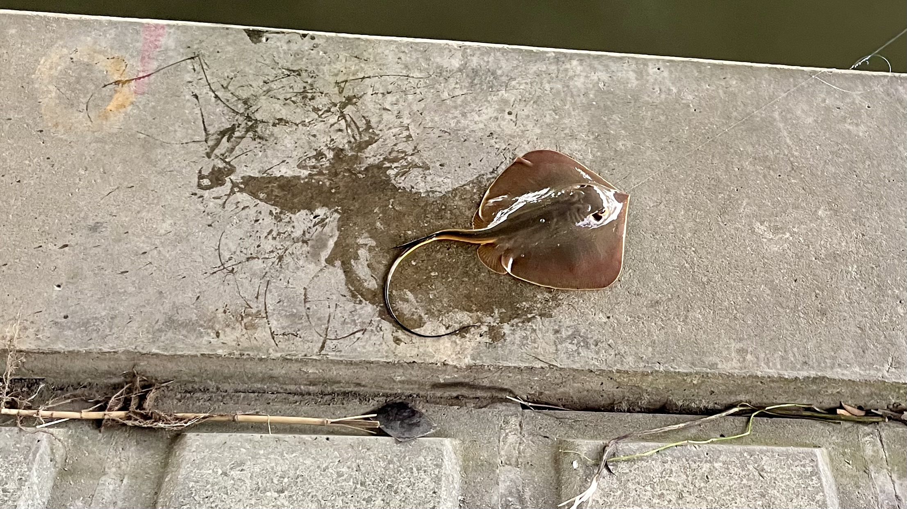

Fishing in Tokyo

Although Tokyo is a busy city, it has many places where people can fish and enjoy the water. Anglers can visit rivers, canals, lakes, and coastal areas around Tokyo Bay.
Fishing offers a peaceful break from city life and gives people a chance to observe local wildlife. Depending on the location and season, anglers may encounter species such as carp, bass, sea bream, and stingrays.
Why This Topic Matters
- Fishing connects people with Tokyo's rivers and coastline.
- It encourages patience, observation, and respect for nature.
- It shows that outdoor experiences can be found inside a large city.